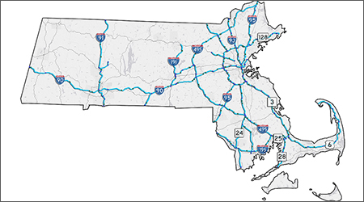
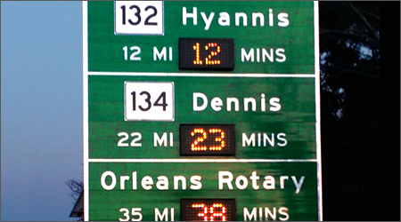
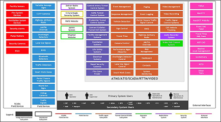
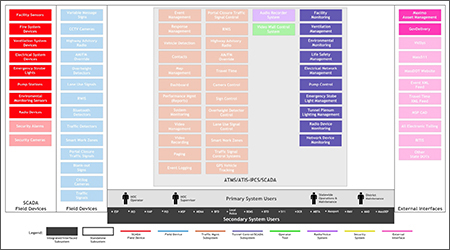
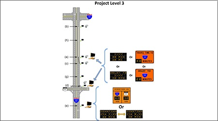
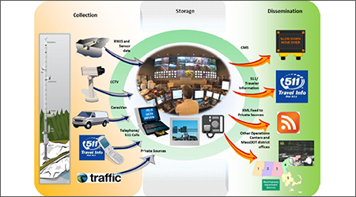
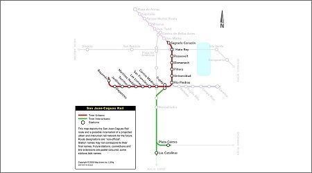

Home
Staff
Projects
Contact
Traveler Information
Systems

GoTime - Statewide RTTM System
Massachusetts
KCUS is currently implementing, operating, and maintaining a software system for Massachusetts’ permanent Statewide Real Time Traffic Management (RTTM) implementation dubbed GoTime.

Cape Cod RTTM Software
Massachusetts
KCUS designed, integrated, and operated the Real Time Traffic Management (RTTM) Software for the permanent Hybrid VMS and Bluetooth Reader-based installation on Rt. 6, Rt. 28, Rt. 25, and Rt. 3 in the Cape Cod area.
RTTM Pilot Program
Massachusetts
As part of two separate projects, KCUS furnished, installed, operated and maintained the two integrated Real Time Traffic Management (RTTM) implementations within Massachusetts.
Software
Systems

ITMS
Massachusetts
KCUS is assisting the Massachusetts Department of Transportation (MassDOT) in the detailed design and implementation process for a new Integrated Transportation Management System (ITMS) to be deployed at MassDOT's Highway Operations Center (HOC).

IPCS/SCADA Design
Massachusetts
KCUS provided technical support to the MassDOT on the design of an upgraded Integrated Project Control System (IPCS)/Supervisory Control and Data Acquisition (SCADA) which will provide tunnel management and SCADA functionality in relation to MassDOT’s roadway tunnel network and facilities.
ATMS/ATIS Design
Massachusetts
KCUS provided technical support to MassDOT on the design of a new Advanced Traffic Management System (ATMS)/Advanced Traveler Information System (ATIS) which will be used at the Highway Operations Center (HOC) as the central traffic management system to manage and respond to incidents occurring along the Massachusetts highway network.
GoTime Data Warehouse
Massachusetts
KCUS is designing and implementing a data warehouse for MassDOT as part of the Statewide Real Time Traffic Management (RTTM) System. The Data Warehouse is a Redshift-based database hosted on Amazon Web Services.
Smart Work Zones Application
Massachusetts
KCUS is currently designing and developing a Smart Work Zones (SWZ) Application for the Massachusetts Department of Transportation (MassDOT). This application will enable the integrated centralized configuration, management, and monitoring of SWZ sites and field devices throughout Massachusetts.
Work Zone ITS Implementation Tool
Massachusetts
KCUS is part of a team working to design, develop, and implement a Work Zone ITS Implementation Tool for the Federal Highway Administration (FHWA).
Port of New Bedford Truck Appointment System
New Bedford, Massachusetts
As part of the New Bedford ITS Project, KCUS was chosen to develop a Truck Appointment System (TAS) for the Port of New Bedford. KCUS worked with MassDOT, the Harbor Development Commission, and the private terminal operator to develop a pilot system.
Transportation
Planning
KAEC Transportation Framework
Saudi Arabia
KCUS is currently developing a transportation framework for King Abdullah Economic City (KAEC), which is the largest of four economic cities currently being built in Saudi Arabia. The development of the KAEC Transportation Framework would be the first phase in the development of a more detailed transit and ITS Master Plan.
PACTS Travel Speed Data Report
Portland, Maine
KCUS developed a travel speed data report on the Portland, Maine area for the Portland Area Comprehensive Transportation System (PACTS).
ITS Planning in Colombia
Colombia
KCUS offered technical assistance to the Colombian Ministry of Transport regarding the planning and implementation of Intelligent Transportation System (ITS) technologies.
I-90 ITS Design
Massachusetts
KCUS assisted MassDOT in the implementation of ITS on I-90, west of Route 128 and I-95. This project involved the placement of eighteen (18) closed-circuit television (CCTV) cameras along I-90.
I-495 ITS ConOps
Massachusetts
KCUS developed the ITS Concepts of Operations (ConOps) and System Requirements Specification (SyRS) for the I-495 ITS deployment.

Smart Work Zone SOPs
Massachusetts
KCUS assisted MassDOT with the development of Standard Operating Procedures (SOPs) for Smart Work Zone (SWZ) deployments across the state.
Regional ITS Architecture Updates
Massachusetts
KCUS reviewed and updated the four regional ITS architectures implemented in 2005 to reflect the changes in the National ITS Architecture, the reorganization of transportation agencies in Massachusetts, the updated Regional Transportation Plans (RTPs), and new transportation projects, plans, policies, procedures, and infrastructure.
ITS Deployment and Design Guide
Massachusetts
KCUS was part of the team that created the MassDOT ITS Deployment and Design Guide. This guide provides more detailed planning and design criteria for ITS device deployments throughout the Commonwealth as established in the MassDOT ITS Strategic Plan.

ITS Strategic Plan
Massachusetts
KCUS participated in the preparation of the ITS Strategic Plan and the Regional Transportation Operations Strategies for the MassDOT ITS Programs. The ITS Strategic Plan provided a 5-year roadmap for the implementation of ITS to improve incident management, congestion management/customer service, and safety/security management.
New Bedford ITS Deployment
New Bedford, Massachusetts
KCUS developed a deployment plan for the City of New Bedford's ITS project to support the City’s goal of becoming the region’s hub for passenger and freight movement.

San Juan Light Rail Feasibility Study
San Juan, Puerto Rico
KCUS was part of a team commissioned to perform a feasibility study for a proposed five-mile long Light Rail Technology (LRT) project in the City of San Juan, Puerto Rico.